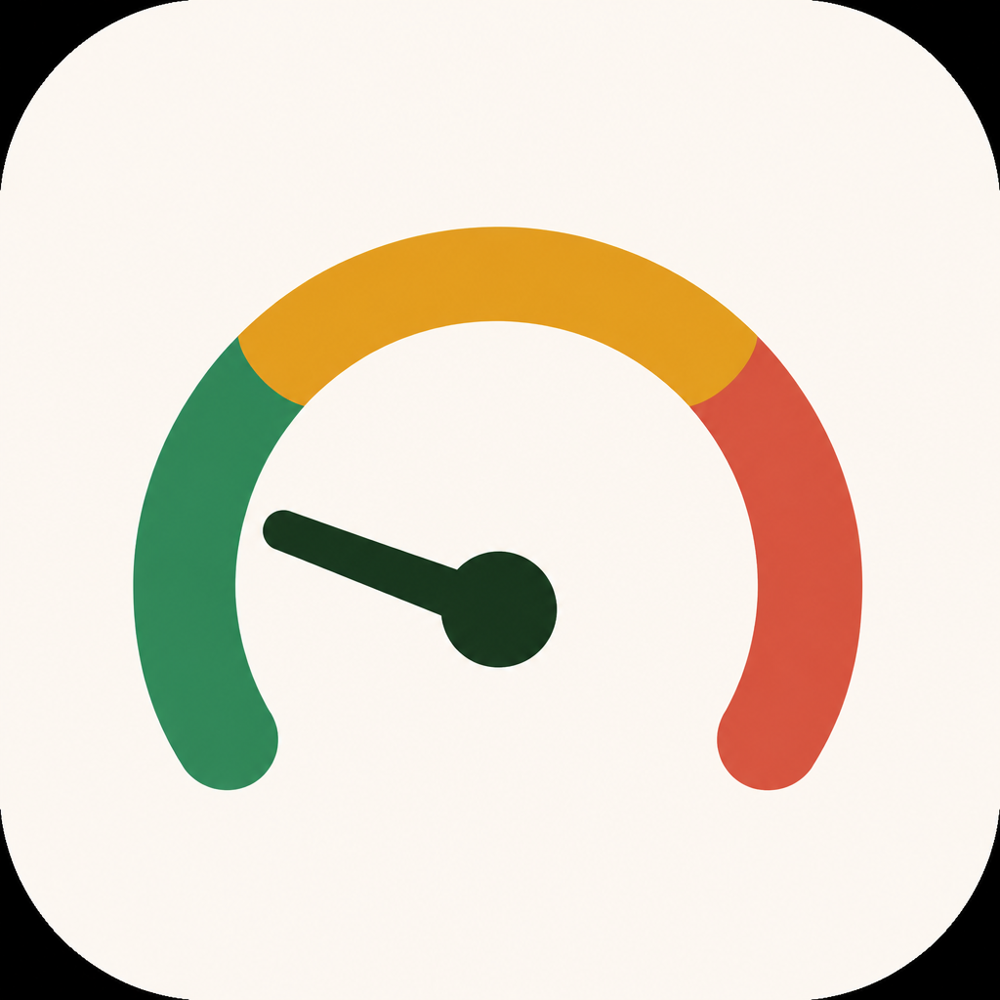
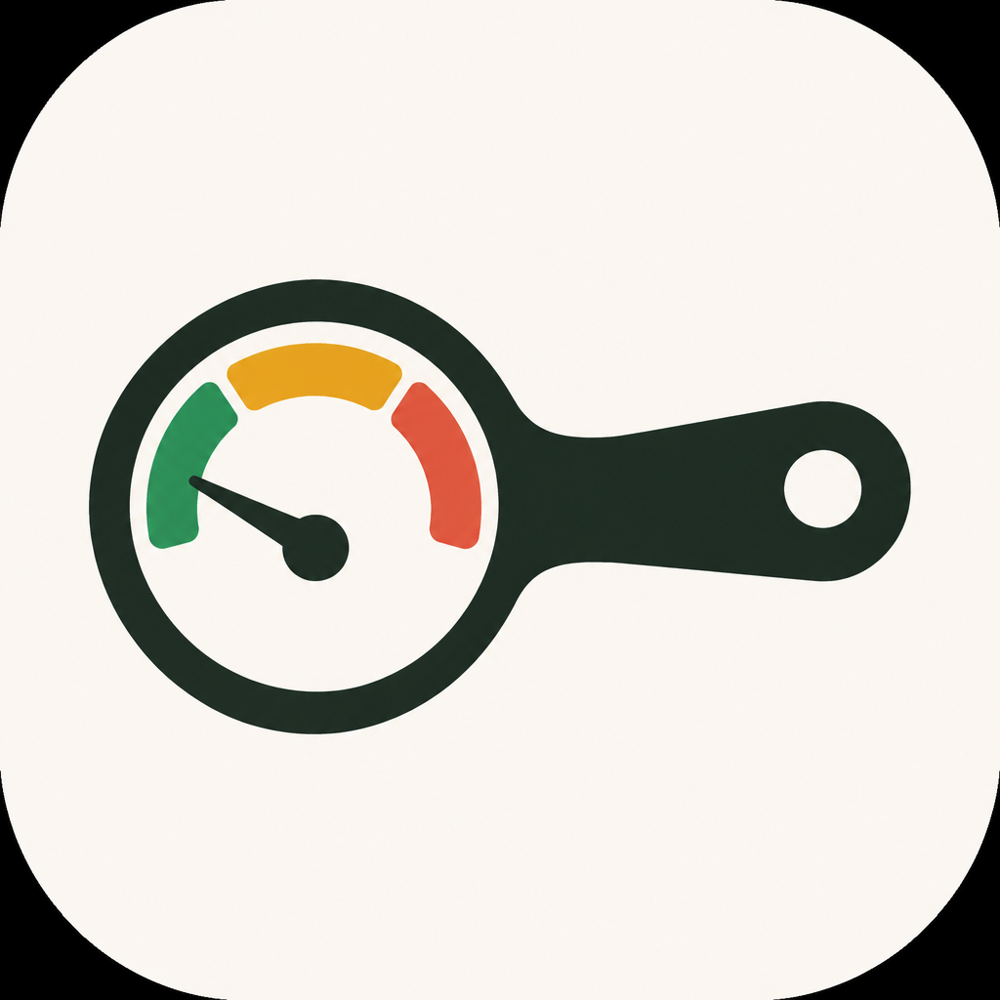
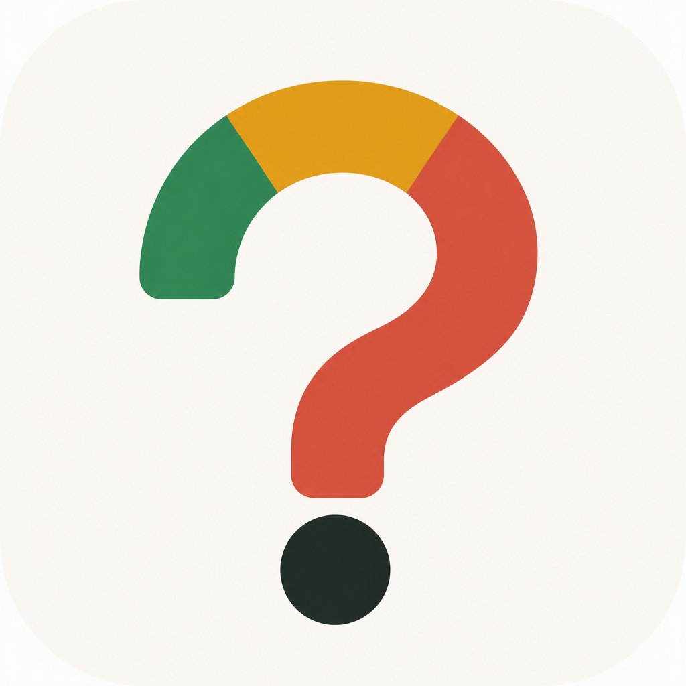
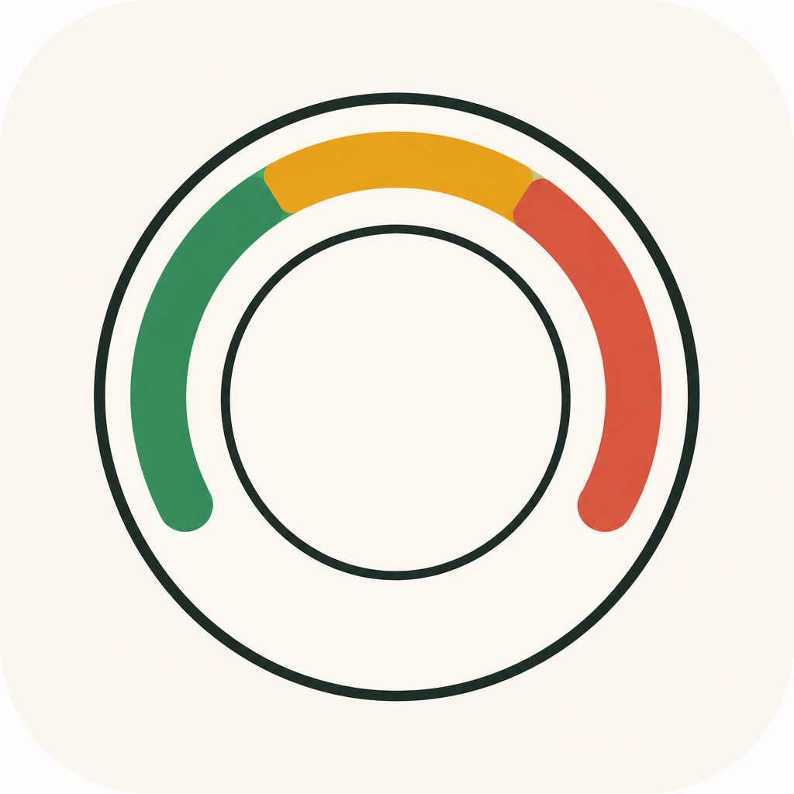
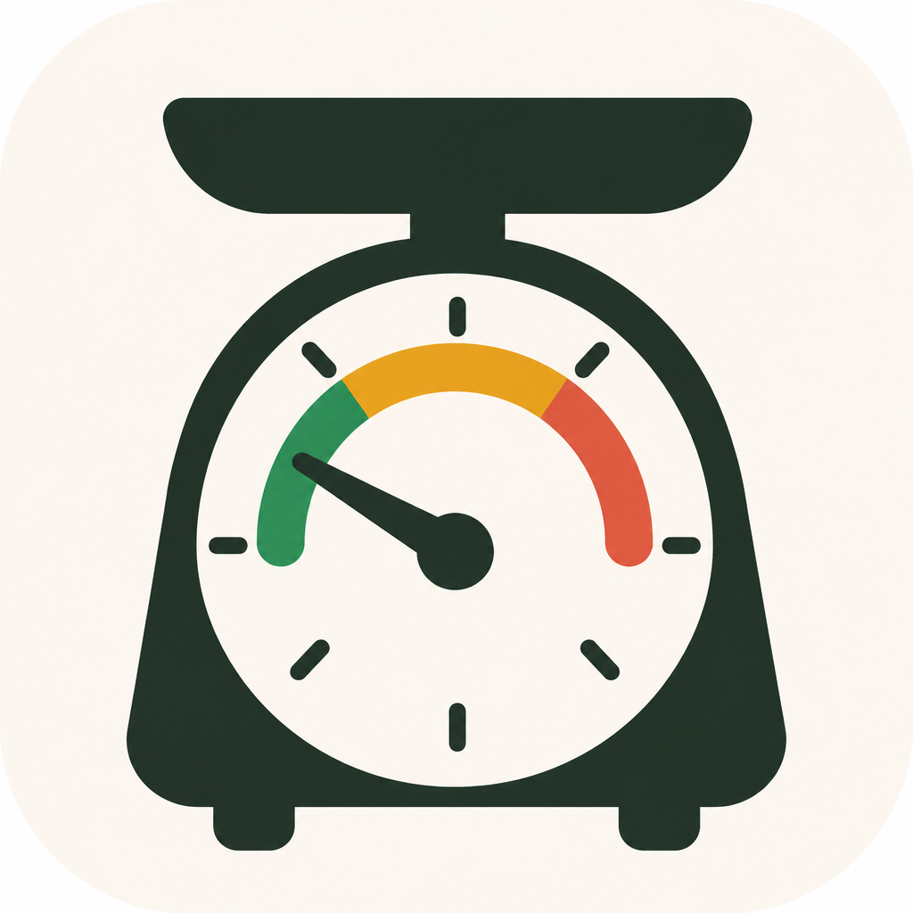
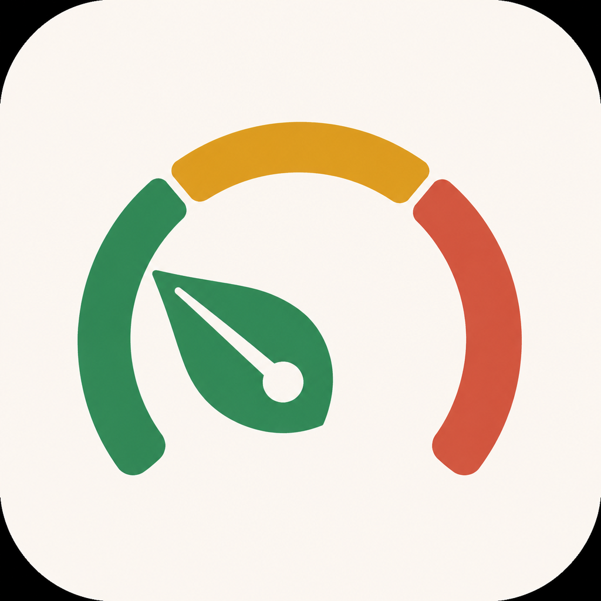

Each one avoids Monash's traffic-light dots. The final mark gets redrawn by hand as clean vector art. The small icons show how each looks as a browser-tab icon.

1 · Gauge (current) · 9/10
"It depends on how much." Simplest, and reads at 16 px.

2 · Measuring spoon · 8/10
Portion + kitchen in one. Warm, but busier at small sizes.

3 · Question-mark gauge · 7.5/10
Echoes "Is it…?" Clever, but the "?" can feel like "unsure".

4 · Plate rim · 7/10
Fits meals and stacking. Less clear as a "how much" signal.

5 · Kitchen scale · 8/10
Says "grams" instantly: our data is in grams. Friendly.

6 · Leaf in gauge · 6.5/10
Adds "food". Leaves are very common in health logos.